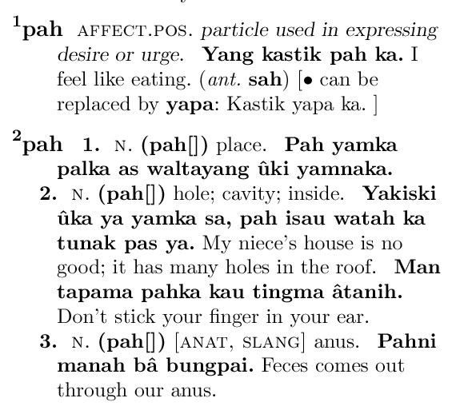
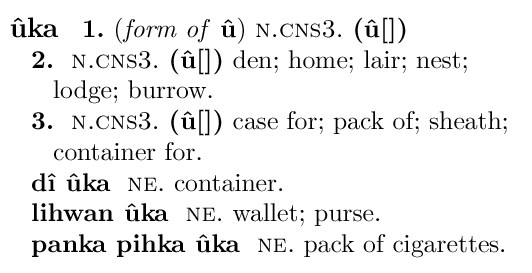
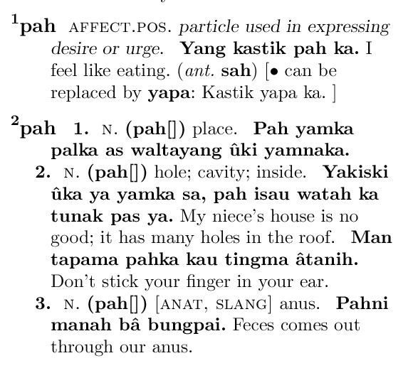
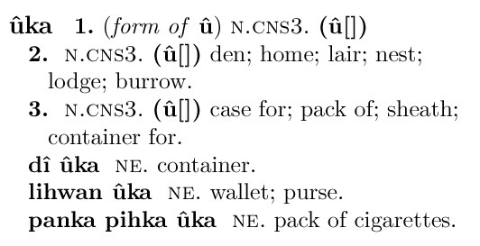

More complex entries (print version) The following print entries demonstrate homographs vs. multiple senses, subentries, notes, xrefs (antonym ref), etc.  
The following print entries demonstrate homographs vs. multiple senses, subentries, notes, xrefs (antonym ref), etc.  